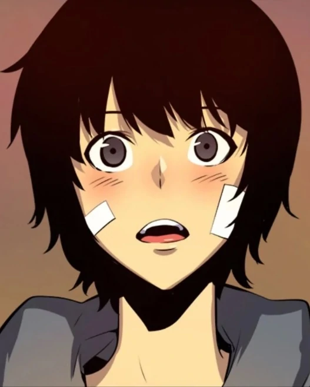
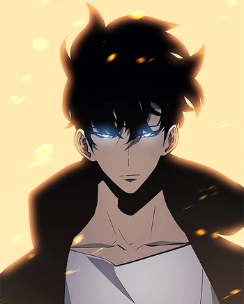

|
Summary
Sung Jinwoo is the main protagonist of Solo Leveling. Originally an infamously weak E-Rank
Hunter, he got
the chance of a lifetime when he was selected as the Player of the System, giving him the unique
ability to grow
in strength without restraint. As a result, by taking advantage of the opportunities offered to him
by the
System, Sung Jinwoo eventually rose to power as humanity's greatest hunter and the second Shadow
Monarch.
Personality
Jinwoo is a confident individual with a strong sense of family and a thirst for power. As
a result, he is very close to his sister, mother, and Jinho, and rarely wastes an opportunity to
grow stronger.
Appearance
Back when he first awakened, Jinwoo was a short, scrawny young man with hair long enough
to
completely cover his ears. His face was also very boyish, which made him look even younger than his
sister Jinah, and he tended to dress in a simple blue hoodie and jeans. After his second awakening,
Jinwoo became a handsome and muscular young man with gray eyes, black hair, and sharp facial
features. When using his powers or agitated, his eyes glow bright purple. He is almost always seen
wearing dark colors, particularly black.
Powers and Abilities
Supernatural Condition: Following his Awakening, Jin-Woo gained highest physical abilities above a
normal human, but lower than Hunters. After his reawakening, and because of the leveling system, his
various physical capabilities have been heightened the more he leveled up and put points into his
stats, he could content with some of the strongest hunters and monsters.
Immense Mana: Although, his mana was weaker than normal E-Ranks, following his leveling up, and
putting points into his Intelligence stats, his mana has grown to the point where he could be
classified as one of the S-Rank Hunters, his level being stated to be either above S and
National-Level Hunters.
Unlimited Inventory: Because of the System, Jin-Woo has access to a limitless storage akin to a
dimensional storage, where he can store endless items, thus removing the need for him to carry
anything on him.
System Shop: After reaching a certain level, he gained access to the item shop,
where he can acquire various items ranging from clothes, weapons, armors, and support items such as
high-end healing potions.
Kandiaru's Blessing: After his Reawakening, Jin-Woo earned a passive
skills, which will always keep him strong and healthy. Even if he loses, a limb, it'll recover after
a period of time through Will to Recover. And Longevity, which makes him immune to all diseases,
poisons, and other abnormalities, as well as his natural regenerative abilities all being enhanced,
while sleeping.
Speed: A skill that increases his speed by 30% using 1 mana each minute, it later
evolved into Quicksilver, although, its exact effects weren't revealed, it increases it further than
normal.
Bloodlust: A skill that intimidates his opponents using strong energy for one minute,
which induces a state of fear, reducing their stats by 50%.
Stealth: A skill that allows him to
remain hidden with his surroundings, hiding his presence and mana.
Dagger Throw: A skill that
allows him to toss his daggers at his opponent, having learned Ruler's Authority, he can use all the
daggers he have remotely, it later evolved into Dagger Rush, although, the exact effect hasn't been
revealed, it increased it further than normal.
Critical Strike: A skill that allows him to aim
his daggers at his opponent vital spot, it later evolved into Mutiliate.
Shadow Extraction:
Jin-Woo can extract the shadows of enemies he has defeated as long as life doesn't exist within
them, instead using their residual mana as a source.
Shadow Save: Jin-Woo can store the shadows
that he has turned into his soldiers inside of his own shadow and recall them when needed.
Shadow
Exchange: Jin-Woo can switch places with whatever shadow he has summoned and sent to another
location without distance limit.
Domain of the Monarch: An area-effect power, which increases the
powers of his Shadows, replacing the colors of those Knight Grade Shadows from Blue and Black to
Purple and Black.
Ruler's Authority: A power common among Monarchs and Rulers, Jin-Woo is granting
power akin to psychokinesis, letting him control physical items without actual contact.
|


|